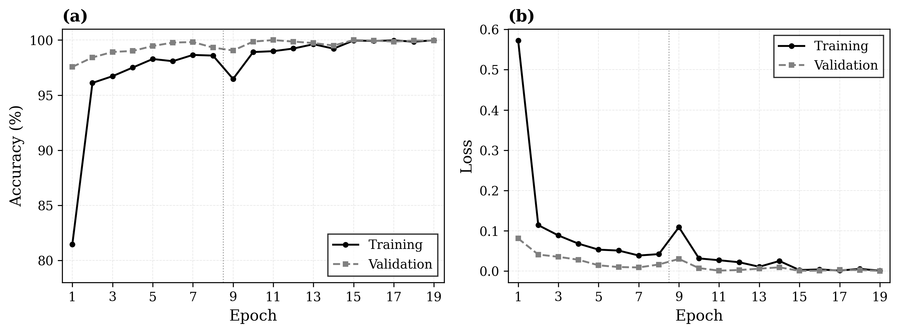

Detects 9 arecanut palm diseases from a phone photo or a drone survey — on-device and offline. Built with a team of 4.
Arecanut is Karnataka's primary cash crop. Farmers lose significant yield to diseases that are invisible until advanced. This system detects them from a phone photo or a drone survey — on-device, offline, no server. The interesting engineering was not getting high accuracy — it was proving the accuracy was real.
Most models trained on ground-level photos collapse when tested on drone footage — the viewpoint, scale, lighting, and angle are fundamentally different. So the model was also evaluated on a separate external dataset collected differently from the training data, rather than only on a held-out split.
To verify the distributions were actually different (not just relabeled copies), MobileNetV2 embeddings were extracted from both sets and compared using cosine similarity and t-SNE visualization. The feature spaces were genuinely different. That makes the external test a real check of generalization, not a repeat of the validation set.

Cross-entropy loss and multi-class classification accuracy across training epochs for the 9-class MobileNetV2 architecture. Reaches 98.5% validation and 99.95% on external out-of-distribution field tests.
React Native gives RGBA from camera. The Python training pipeline used OpenCV which reads BGR. Feeding RGBA into a BGR-trained model gives wrong predictions even when the image looks identical. Fix: read raw pixels from a Skia surface and manually reorder channels before building the Float32Array. Small detail, real consequence — without this the model would be unusable on mobile.
Used MobileNetV2 + t-SNE + cosine similarity to confirm the external test set was genuinely out-of-distribution — not just a different split of the same photos.
Full Keras H5 → TFLite INT8. Model is ~3MB, runs entirely on-device, no internet required.
| Disease / Class | Category |
|---|---|
| Mahali Koleroga | Disease |
| Stem Bleeding | Disease |
| Bud Borer | Disease |
| Stem Cracking | Disease |
| Yellow Leaf Disease | Disease |
| Healthy Leaf | Healthy |
| Healthy Nut | Healthy |
| Healthy Trunk | Healthy |
| Healthy Foot | Healthy |
Technical reports, validation curves, and full architecture specifications: